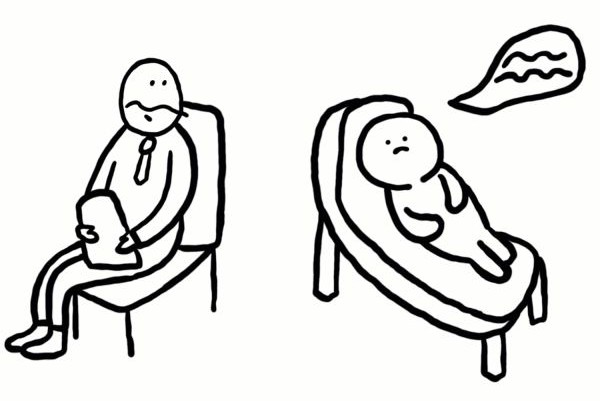

One of the biggest advantages of online therapy is accessibility. Many people live in areas where
professional therapists are hard to find, or they may face difficulties in commuting to clinics due to
distance, financial constraints, or physical limitations. Online therapy removes these barriers by allowing
individuals to connect with licensed professionals from the comfort of their own homes. This accessibility
ensures that more people can get the help they need, regardless of location or circumstance.
However, it is important to acknowledge that online therapy also has limitations. Not all mental health
issues can be addressed virtually, especially severe conditions that require in-person medical supervision.
Internet connectivity and technological literacy can also be obstacles for some individuals. Still, when
combined with traditional practices, online therapy provides a strong foundation for more inclusive mental
health care.
Online therapy has become an innovative way to make mental health care more approachable and inclusive. It
bridges the gap for people who struggle with distance, time, or social stigma by offering professional
support that can be accessed anytime and anywhere. Instead of limiting therapy to a physical clinic, online
platforms create a safe and flexible space where individuals can talk about their struggles without
judgment. This not only makes therapy more practical but also helps break the silence around mental health,
showing that seeking help is both normal and empowering.
At the same time, it's important to recognize that online therapy is not a perfect solution for everyone.
Severe mental health conditions often require in-person treatment, and some people may face challenges such
as poor internet access, lack of privacy at home, or unfamiliarity with technology. For these individuals,
virtual sessions may feel limited compared to traditional face-to-face conversations. However, the value of
online therapy lies in the opportunities it creates. It allows students to talk to a counselor after class,
workers to schedule a session during breaks, or parents to seek guidance late at night when responsibilities
feel overwhelming. It also provides a sense of comfort for people who are shy or anxious about opening up in
person, making therapy less intimidating and more accessible. When combined with traditional mental health
care, online therapy can strengthen the overall system by reaching those who might otherwise remain
unsupported. In this way, it is not just an alternative but an important addition to building a society that
treats mental health with the same priority as physical health.